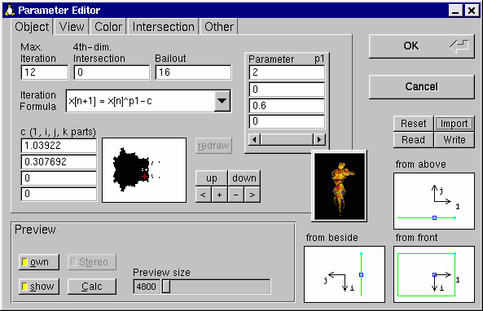
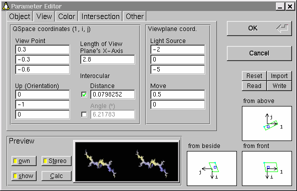
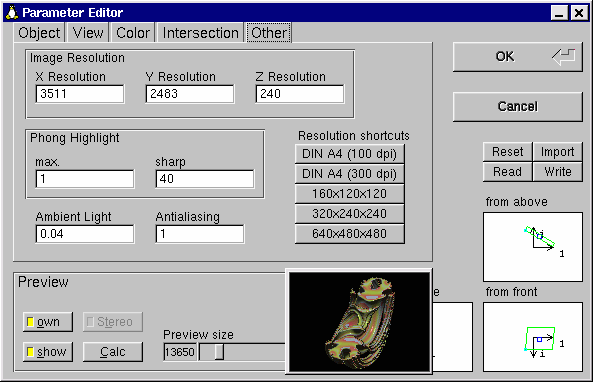

"Image"-Menü:
Image | Open...
(Bild | Öffnen). Öffnet ein Bild (PNG-Datei), zeigt es an
und lädt die Parameter, die in ihm gespeichert sind. Abschließend
zeigt Quat an, wie weit das Bild bereits berechnet ist.
Möglicherweise erhalten Sie die Fehlermeldung "PNG file has no
QUAT chunk". Das passiert, wenn Sie versuchen, eine PNG-Datei zu öffnen,
die von einem anderen Programm geschrieben wurde. In diesem Fall kann Quat
die fraktalen Parameter nicht lesen und das Bild ist nutzlos für Quat.
Image | Close
(Bild | Schließen). Schließt das Bild, läßt
aber die dazugehörigen Parameter im Speicher. Wenn Sie einige Parameter
eines Bildes ändern wollen, müssen Sie erst das Bild schließen,
dann die Parameter verändern und als letzten Schritt das Bild neu
berechnen.
Image | Save
(Bild | Speichern). Speichert das Bild (PNG) unter dem Namen, der in
der Titelzeile angezeigt wird. Oft ist dieser Name computergeneriert mit
einer Nummer am Ende.
Alle Parameter, die benötigt werden, um das Bild neu zu berechnen,
werden zusammen mit dem Bild gespeichert.
Image | Save As...
(Bild | Speichern unter). Speichert das Bild wie unter "Image | Save"
beschrieben, bloß mit einem benutzerdefinierten Namen. Den Namen
können Sie in dem Dialog eingeben, der erscheint, nachdem Sie diesen
Menüpunkt angewählt haben.
Image | Adjust Window
(Bild | Fenster einstellen). Setzt die Größe des Fensters
entsprechend der Bildgröße (solange es auf den Bildschirm paßt).
Image | Exit
(Bild | Beenden). Beendet Quat.
"Calculation"-Menü:
Calculation | Start/Resume an image
(Berechnung | Starten/Fortsetzen eines Bildes). Beginnt die Berechnung
eines Bildes unter Benutzung der aktuellen Parameter (siehe "Parameters"-Menü)
oder setzt eine unterbrochene Berechnung fort.
Wenn ein ZBuffer geöffnet ist (der vollständig berechnet
ist), können Sie ihn mit diesem Menüpunkt zu einem
Bild machen (siehe Abschnitt 2.3).
Ein Bild ist ein fraktales Objekt, das beleuchtet und gefärbt
ist, im Gegensatz zu einem ZBuffer.
Calculation | Start/Resume a ZBuffer
(Berechnung | Starten/Fortsetzen eines ZBuffers). Beginnt die Berechnung
eines ZBuffers unter Benutzung der aktuellen Parameter (siehe "Parameters"-Menü)
oder setzt eine unterbrochene Berechnung fort.
Ein ZBuffer hat die Form eines fraktalen Objektes, aber es ist nicht
beleuchtet oder eingefärbt. Die Berechnung eines ZBuffers erledigt
den langsamen Teil der ganzen Berechnung, den ZBuffer in ein Bild zu verwandeln
ist relativ schnell. Der Vorteil von ZBuffern ist, daß man noch einige
Parameter, die die Form des Fraktals nicht beeinflussen (Beleuchtung und
Farbe), ändern kann und dann recht schnell ein Bild berechnen kann.
Wenn Sie das Aussehen des Fraktals nicht mögen, schließen Sie
einfach das Bild, wodurch Sie wieder zum ZBuffer zurückgelangen. Mehr
über ZBuffer in Abschnitt 2.3.
Calculation | Stop
(Berechnung | Stop). Unterbricht eine laufende Berechnung (sowohl die
eines Bildes, als auch eines ZBuffers). Sie können die Berechnung
fortsetzen, siehe die beiden Menüpunkte oben.
"Parameters"-Menü:
Parameters | Reset
(Parameter | Zurücksetzen). Setzt alle Parameter zurück auf
ihre Vorgabewerte. Wenn Sie mit diesen Werten ein Bild berechnen, erhalten
Sie eine blaue Kugel.
Parameters | Read from INI...
(Parameter | Lies aus INI). Liest die Parameter ein, die nötig
sind, um ein Bild zu erstellen.
Nach der Auswahl einer INI-Datei werden Sie gefragt, ob Sie von den
voreingestellten Parametern ausgehen wollen. ("Do you want to start from
default parameters? (Recommended.)") Das empfiehlt sich, wenn die INI-Datei
ein komplettes Bild beschreibt. Wenn es aber beispielsweise nur darum geht,
eine andere Farbpalette zu laden, sollte man natürlich nicht
von den Voreinstellungen ausgehen.
Die INI-Datei kann mit "Save As" oder mit einem Texteditor erstellt
worden sein. Eine INI-Datei beinhaltet die Daten, die nötig sind,
um ein Bild zu generieren.
Parameters | Read from PNG...
(Parameter | Lies aus PNG). Alle Daten zur Bilderzeugung werden mit
dem Bild selbst mitgespeichert (in Übereinstimmung mit der
PNG-Spezifikation).
Dieser Menüpunkt liest die Daten aus dem Bild wieder ein, um ein neues
zu erzeugen oder die Parameter zu editieren.
Parameters | Save As...
(Parameter | Speichern unter). Speichert die Parameter in einer INI-Datei,
die eine einfache Textdatei ist und mit einem Texteditor bearbeitet werden
kann. Dieser Befehl ist nützlich, wenn Sie das Bild mit der Textversion
von Quat berechnen wollen. (Die Textversion benutzt INI-Dateien, um die
Parameter zu erhalten, die sie benötigt).
Sie können wählen, welche Gruppe von Parametern gespeichert
werden soll: "Object Data" (Objektdaten), "View Data" (Ansicht), "Color Data"
(Farbinformation) oder "Other Data" (Sonstige).
Die Editoren (in denen Sie die Parameter eingeben können):
Parameters | Edit...
(Parameter | Bearbeiten). Es öffnet sich der sog. "Parameter Editor", der folgendermaßen
aussieht (hier gezeigt: X-Window-Version Die Karteikarte "Object" ist gewählt.
Das kleine schwarze Fenster ist die Julia-Vorschau, die man frei verschieben
kann.):

In diesem Dialog können Sie alle Parameter einstellen, die das
Fraktal bestimmen. Sie können sich zusätzlich eine Vorschau zu
den jeweils aktuell eingestellten Parametern berechnen lassen.
Mit den Tabs ("Reitern") können Sie wählen, welche Art von
Parametern Sie verändern wollen:
Im Vorschaufenster wird das Fraktal berechnet, wie es bei der aktuellen
Wahl der Parameter aussehen würde. Das ist praktisch zum Herumexperimentieren,
da sich selten die Auswirkung beim Ändern eines Parameters einfach
voraussagen läßt.
Der Button "Calc" (Berechne) berechnet die Vorschau und zeigt sie rechts
an. Ist gleichzeitig der Button "own" (eigene) aktiviert (aktiv = gelbes Licht),
so werden tatsächlich die Parameter zur Berechnung benutzt, die momentan
im Editor eingestellt sind. (Außer natürlich der Auflösung
und auch dem Anti-Aliasing). Ist dieser Knopf nicht aktiv, so wird eine
Standard-Sicht des Fraktals berechnet. Das kann z. B. notwendig sein, wenn
man sich "verirrt" hat, oder beispielsweise als Farbe aus Versehen schwarz
gewählt hat.
Ist im View Editor eine "Interocular Distance" (Abstand zwischen den
Augen) ungleich Null eingetragen, so kann mit dem "Stereo"-Button gewählt
werden, ob die Vorschau in Stereo (langsamer, dafür wirklich dreidimensional)
oder in Mono berechnet wird. Das reale Bild wird in diesem Fall immer in
Stereo berechnet.
Der Button "show" (zeige) zeigt/versteckt das Julia-Vorschau-Fenster.
Die View-Selektoren (Ansicht-Auswähler) sind eigentlich eine Ergänzung zum View Editor, die aber aus Platzgründen im gemeinsamen Bereich untergebracht werden mußten. Eine Besprechung ihrer Funktionalität siehe View Editor.
Die Aktions-Buttons entsprechen den Befehlen im "Parameters"-Menü, sie erlauben es also, im Parameter Editor eine INI-Datei zu lesen, die Parameter (oder Teile davon) abzuspeichern, die Parameter zurückzusetzen oder sie aus einem PNG-Bild zu importieren. Diese Aktionen beziehen sich alle auf den Parameter-Editor, wenn Sie also Parameter importieren und den Editor durch "Cancel" (Abbrechen) verlassen, sind die vorherigen Parameter wieder gesetzt.
Der Object Editor:
In diesem Dialog können Sie die fraktalen Daten des Objektes angeben.
Diese Daten bestimmen die Gestalt des Fraktals. Für folgende Schlüsselwörter
können Werte eingegeben werden:
Max. Iteration (maxiter),
4th-dim. Intersection (lvalue),
Bailout,
Iteration Formula und
c.
(Siehe deren Beschreibungen in Abschnitt
4.1)
Wenn eine Iterationsformel (Iteration Formula) gewählt ist, die einen zusätzlichen Parameter p1 benötigt, wird eine Gruppe von 4 Eingabefeldern angezeigt, in der Sie diesen Parameter eingeben können (bzw. die 1-, i-, j-, k-Teile des Parameters).
Es gibt ein Fenster (genannt Mandel-Vorschau), in dem die Mandelbrotmenge (das Apfelmännchen) angezeigt wird (oder genauer, einen zweidimensionalen Schnitt aus der vierdimensionalen Verallgemeinerung der Mandelbrotmenge). Sie kann als Landkarte für "Julia-Mengen" (den Objekten, die Quat berechnet) angesehen werden. Das rote Kreuz markiert den gewählten Punkt c. Jeder Punkt c erzeugt eine andere Julia-Menge. Punkte, die innerhalb der Mandelbrot-Menge (also dem schwarzen Gebiet) liegen, führen zu verbundenen Julia-Mengen, im anderen Fall zu unterteilten.
Sie können mit der Maus an eine beliebige Stelle des Mandel-Vorschau-Fensters
klicken (oder auch ziehen), um das rote Kreuz zu verschieben. Die ersten
beiden Teile des Parameters c werden dementsprechend aktualisiert.
Wenn es notwendig sein sollte, die Mandel-Vorschau zu aktualisieren,
bekommt das Fenster einen roten Rahmen. Drücken Sie dann den "Redraw"-Button
(Neuzeichnen). Das ist z. B. notwendig, wenn einer der Parameter bailout,
maxiter oder die letzen beiden Teile des Parameters c geändert
wurden.
Die sechs Buttons rechts der Mandel-Vorschau dienen der Navigation in
der Mandelbrotmenge. Der Bereich der Mandelbrotmenge, der angezeigt wird, kann
verschoben und gezoomt werden.
Der Button "up" (hoch) bewegt den sichtbaren Ausschnitt nach oben,
"down" (runter) nach unten. Der Button "<" ganz links nach links, der
rechts nach rechts. Die beiden Buttons in der Mitte zoomen in die Mandelbrotmenge
hinein (+) und heraus (-).
Der View Editor
Der Parameter Editor mit selektierter View-Karteikarte sieht folgendermaßen
aus (gezeigt: Linux-Version):

In diesem Dialog wird definiert, wie das Objekt gesehen werden soll. Die Bildebene, auf die das Fraktal projiziert wird, wird durch folgende Parameter festgelegt: View Point (Sichtpunkt), Up (Orientation) (Oben, Orientierung), Move (Verschieben), Length of View Plane's X-Axis (Länge der X-Achse der Sichtebene) und Interocular Distance (Augenabstand). Die Lichtquelle (Light Source) wird hier ebenfalls angegeben. (Siehe Beschreibungen in Abschnitt 4.1).
Unter der Eingabezeile für "interocular distance" ist ein Winkel angegeben. Sie können wählen, ob bei Veränderungen des Sichtpunktes der Winkel oder der Abstand der Augen festgehalten werden soll. Wenn Sie ein 3D-Stereo-Paar generieren wollen, sollte dieser Winkel zwischen 5 und 8 Grad betragen. Wenn "interocular" Null ist (und damit auch der Winkel), wird eine 2d-Projektion des fraktalen Objektes erzeugt.
Da es langweilig wäre, wenn man nur Werte eingeben könnte,
die man auch in einem Texteditor angeben könnte (INI-Datei), befinden
sich drei Ansichten des Sichtpunktes und der Bildebene im Parameter Editor.
(Man sieht den Sichtpunkt von oben "from above", von der Seite "from beside"
und von vorne "from front"). Die schwarzen Pfeile sind die Achsen im Quaternionen-Raum
(bzw. im dreidimensionalen Unterraum, der durch 4th-dim. Intersection
definiert wird). "1" ist die ganz normale reelle Zahlenachse, "i" die imaginäre
Achse (wie bei den komplexen Zahlen; diese beiden werden bei jedem 2D-Fraktalprogramm
benutzt) und "j" ist die Achse in die dritte Dimension (Es gibt hier keine
"k"-Achse, da der k-Wert konstant gehalten wird [=4th.-dim. Intersection]).
Die Pfeile deuten die Richtung der positiven Zahlen an, die Länge
der Pfeile entspricht der Länge 2 im Q-Raum.
Das kleine blaue Rechteck markiert den Sichtpunkt (view point), das
grüne Rechteck stellt die Bildebene dar. Wenn man in das blaue Rechteck
klickt, kann man durch Ziehen der Maus den Sichtpunkt verschieben. Manche
Positionen für den Sichtpunkt sind nicht definiert (wenn er (0,0,0)
ist oder wenn er so liegt, daß der up-Vektor rechtwinklig zur Bildebene
liegt). In diesem Fall werden die Eingabefelder, die dafür verantwortlich
sind, rot unterlegt.
Der kleine türkise Kreis ist der Ursprung des Bildkoordinatensystems
(= der linke obere Punkt auf dem Bildschirm).
Der Color Editor
Hier eine Abbildung des Parameter Editors mit seleketierter Karteikarte
"Color" (Linux-Version).
Hier können Farben (oder besser, Farbverläufe) definiert werden. Oben ist eine Laufleiste zu sehen, die dazu dient, denjenigen Farbverlauf auszuwählen, den man editieren möchte. Sie können dazu entweder die Pfeil-Buttons (wie bei einer normalen Bildlaufleiste) benutzen, oder direkt in den Farbverlauf klicken.
Darunter in der linken Spalte ("Range") sind zwei Buttons "Add" und "Del" (Hinzufügen und Löschen). "Add" fügt eine neue Farbe vor der aktuellen Position in der Palette hinzu, "Del" löscht die aktuell ausgewählte. Es muß mindestens eine Farbe existieren, aber nicht mehr als 30. Für jeden Farbverlauf können Sie eine Startfarbe ("Color 1"), eine Endfarbe ("Color 2") und eine Gewichtung ("Weighting") angeben. Die Gewichtung gibt an, welcher Anteil an der gesamten Palette der Farbverlauf ausmacht. Dieser Wert darf nicht Null sein. (Siehe auch Abschnitt 4.2)
Wenn Sie die Buttons "Sel" neben der jeweiligen Farbe anklicken, erhalten Sie einen Dialog, um eine Farbe auszuwählen. Falls Sie anstatt eines Farbverlaufs nur eine einfache Farbe definieren wollen, setzen Sie beide Farben des Farbverlaufs (Color 1 und Color 2) auf dieselben Werte.
Mit "Copy" wird die jeweilige Farbe in die Zwischenablage kopiert (nicht in die globale von Windows/X, sondern in das Feld rechts oben im Dialog), mit "Paste" können Sie die jeweilige Farbe durch die Farbe in der Zwischenablage ersetzen.
Unten ist das Eingabefeld, in das Sie die Farb-Formel eintragen können,
entweder direkt, oder durch Anklicken einer vordefinierten Formel. (Beschreibung
siehe Schlüsselwort "colorscheme").
Eine Farb-Formel stellt eine Verbindung her zwischen bestimmten Parametern des
Fraktals (z.B. den Q-Raum-Koordinaten des Objektpunktes "x", "y" und "z") und
der Farbpalette, wie sie im Farbbalken oben dargestellt wird.
Die linke Seite des Farbbalkens entspricht der "0", die rechte der "1".
|
Ein Beispiel: Wenn Sie von den voreingestellten Parametern (blaue Kugel)
ausgehen ("Reset" anklicken) und einfach "x" als Farbformel eingeben,
wird die Palette von links nach rechts auf die Kugel "abgebildet". (Drücken
Sie "Calc", um eine Vorschau anzuzeigen.) Wenn Sie's nicht mögen, daß die Palette in der Mitte der Kugel wieder von vorne anfängt, probieren Sie "x+0.5" als Farbformel. Jetzt (nach Berechnung der Vorschau) sind alle Farben nach links verschoben. Das ist noch nicht ganz, was wir vorhaben, wir müssen die Abbildung noch ein bißchen strecken: Probieren Sie jetzt "0.8*x+0.5". Das Gebiet in der Mitte, das die ganze Kugel überdecken soll, ist größer, aber noch nicht groß genug. Nach etwas Herumprobieren stellen wir fest, daß "0.5*x+0.5" das gewünschte Resultat liefert. Diese Formel bildet die gesamte Palette von links nach rechts auf die Kugel ab. Sie können noch die Palette ändern, um sich zu überzeugen, daß die Farben unabhängig von ihrer "Abbildung" sind und umgekehrt. Und Sie können das selbe ausgehend von "y" oder "x+y" als Farbformel machen. |
Der Intersection Editor
Ein Screenshot des Intersection Editors (Linux Version):

Wird benutzt, um Schnittebenen zu definieren. Die Laufleiste links hat genau denselben Zweck wie die beim Farbeditor oben: das zu bearbeitende Objekt auszuwählen. Die Buttons "Add" und "Del" funktionieren ebenfalls wie oben, der eine fügt eine neue Schnittebene hinzu, der andere löscht die gerade gewählte. Es können zwischen 0 und 20 Schnittebenen eingerichtet werden. Eine Ebene wird definiert durch den Normalenvektor (der in den Halbraum zeigt, der vom Objekt weggeschnitten wird), der nicht Null sein darf, und einem Aufpunkt auf der Ebene. (Siehe auch Abschnitt 4.3)
Andere Parameter:

Die anderen Parameter sind:
Image Resolution,
Phong Hightlight,
Ambient Light und
Antialiasing.
Beschreibung des ersten
siehe Abschnitt 4.4, der letzten drei siehe Abschnitt
4.1.
In diesem Dialog befinden sich fünf Buttons, die als Abkürzung
für bestimmte Auflösungen dienen. Wenn Sie einen davon drücken,
wird die Auflösung auf die angegebenen Werte gesetzt.
"ZBuffer"-Menü:
Zu ZBuffern lesen Sie bitte Abschnitt 2.3. Die Menüpunkte in diesem Menü dienen dem Laden, Speichern und Schließen eines ZBuffers. Sie haben dieselbe Bedeutung wie die Kommandos für Bilder, bloß daß sie sich natürlich auf einen ZBuffer beziehen.
"Help"-Menü:
Help | Manual
(Hilfe | Anleitung). Zeigt die Dokumentation, die Sie momentan lesen.
Help | About
(Hilfe | Über). Zeigt Informationen über Quat.
| -i <INI-Datei> | Berechnet ein Bild aus einer INI-Datei. (INI-Dateien werden benutzt, um Quat mit den Werten zu füttern, die das Fraktal und die Ansicht, etc., bestimmen.) |
| -z <INI-Datei> | Berechnet einen ZBuffer (Dateityp ZPN) aus einer INI-Datei |
| -i <ZPN-Datei> | Erzeugt ein Bild unter Verwendung eines vorher berechneten ZBuffers. (Ist natürlich wesentlich schneller als die Erzeugung aus einer INI-Datei.) |
| -i <ZPN-Datei> <INI-Datei> | Erzeugt ein Bild aus einem ZBuffer, ersetzt jedoch bestimmte Parameter (z.B. Farbgebung) durch die in der INI-Datei angegebenen Werte. |
| -p <PNG- oder ZPN-Datei> | Liest die Parameter, mit denen das betreffende Bild/ZBuffer berechnet wurde und schreibt sie in eine INI-Datei. |
| -c <PNG- oder ZPN-Datei> | Setzt die Berechnung eines unfertigen Bildes oder ZBuffers fort. Die INI-Datei, aus der das Bild/ZBuffer generiert wurde, wird nicht mehr benötigt. |
| -h | Anzeigen einer Kurzinformation |
Ein Aufruf sieht also beispielsweise so aus:
quat -i test.ini
Eine Berechnung wird abgebrochen, indem